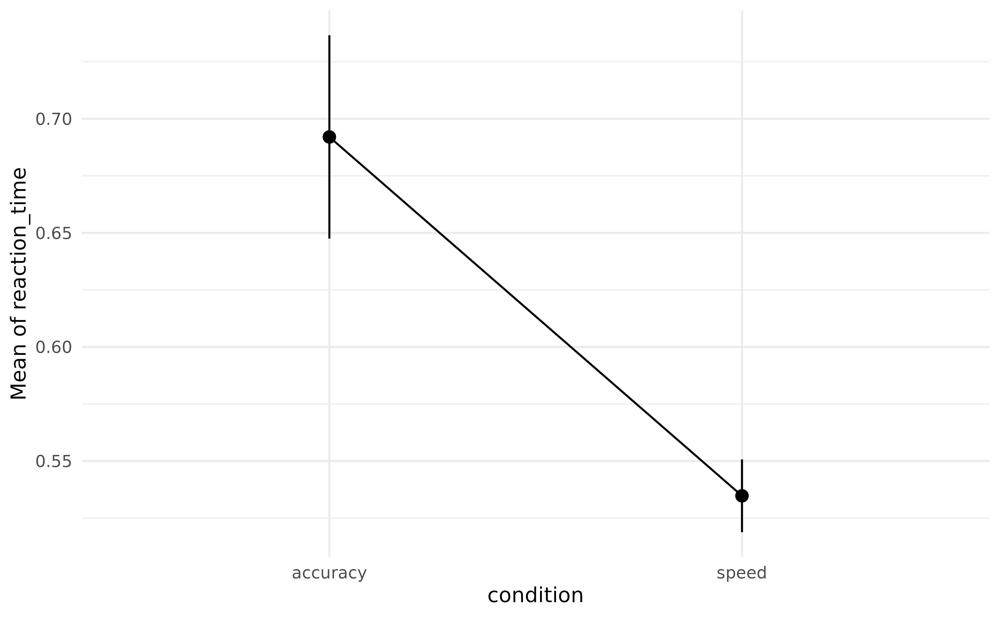
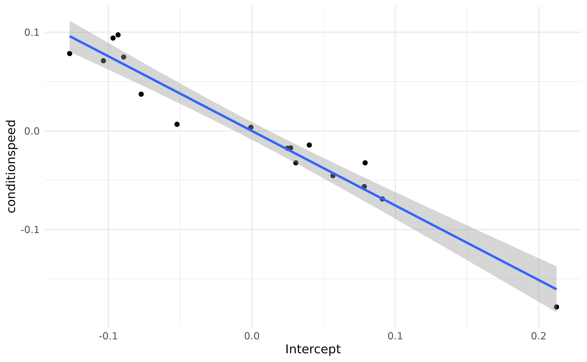

How to use Mixed models to Estimate Individuals' Scores
Source:vignettes/estimate_grouplevel.Rmd
estimate_grouplevel.RmdMixed models are powerful tools that can be used for a variety of interesting purposes. Indeed, while they are typically used to be more accurate and resilient in estimating population-level effects (aka the “fixed” effects), they can also be used to gain insight into group-level effects (e.g., individuals’ scores, if the random factors are individuals).
For this practical walkthrough on advanced mixed model
analysis, we will use the Speed-Accuracy Data
(Wagenmakers, Ratcliff, Gomez, & McKoon, 2008) from the
rtdists package, in which 17 participants
(the id variable) performed some reaction time (RT)
task under two conditions, speed and accuracy (the
condition variable).
Our hypotheses is that participants are faster (i.e., lower RT) in the speed condition as compared to the accuracy condition. On the other hand, they will make less errors in the accuracy condition as compared to the speed condition.
In the following, we will load the necessary packages and clean the data by removing outliers and out-of-scope data.
library(easystats)
library(rtdists)
# Remove outliers & Keep only word condition
data <- rtdists::speed_acc |>
data_filter(rt < 1.5 & stim_cat == "word" & frequency == "low") |>
data_rename(select = c(reaction_time = "rt"))
# Add new 'error' column that is 1 if the response doesn't match the category
data <- data_modify(
data,
error = ifelse(as.character(response) != as.character(stim_cat), 1, 0)
)Speed (RT)
Population-level Effects
For the reaction time, we will start by removing all the incorrect responses, since they are not reflective of a “successful” cognitive process. Then, and we will plot the RT according to the condition and stimulus category.
library(ggplot2)
data_rt <- data_filter(data, error == 0)
ggplot(data = data_rt, aes(y = reaction_time, x = condition, fill = condition)) +
geom_violin()
The descriptive visualisation indeed seems to suggest that people are slower in the accuracy condition as compared to the speed condition. And there could also be a slight effect of frequency.
Let’s verify that using the modelisation approach.
library(lme4)
model_full <- lmer(
reaction_time ~ condition + (1 + condition | id) + (1 | stim),
data = data_rt
)Let’s unpack the formula of this model. We’re tying to predict
reaction_time using different terms. These can be separated
into two groups, the fixed effects and the random
effects. Having condition as a fixed effect means that we
are interested in estimating the “general” effect of
the condition, across all subjects and items (i.e., at the
population level). On top of that effect of
condition, a second ‘fixed’ parameter was implicitly specified and will
be estimated, the intercept (as you might know, one has
to explicitly remove it through
reaction_time ~ 0 + condition, otherwise it is added
automatically).
Let’s investigate these two fixed parameters first:
parameters(model_full, effects = "fixed")> # Fixed Effects
>
> Parameter | Coefficient | SE | 95% CI | t(4506) | p
> --------------------------------------------------------------------------
> (Intercept) | 0.69 | 0.02 | [ 0.65, 0.74] | 30.44 | < .001
> condition [speed] | -0.16 | 0.02 | [-0.19, -0.12] | -8.53 | < .001Because condition is a factor with two levels, these
parameters are easily interpretable. The intercept corresponds
to the reaction_time at the baseline level of the factor
(accuracy), and the effect of condition corresponds to the change in
reaction_time between the intercept and the speed
condition. In other words, the effect of condition refers
to the difference between the two conditions,
speed - accuracy.
As we can see, this difference is significant, and people have,
in general, a lower reaction_time (the
sign is negative) in the speed condition.
Let’s visualize the marginal means estimated by the model:
means <- estimate_means(model_full, by = "condition", backend = "marginaleffects")
plot(means, point = list(alpha = 0.1, width = 0.1)) +
theme_minimal()
Now, what’s up with the random effects. In the
formula, we specified random intercepts (i.e., the right part of the bar
| symbol) for id (the participants) and
stim. That means that each participant and each
stimulus will have its own “Intercept” parameter (which, as
we’ve seen before, corresponds to the reaction_time in the
accuracy condition). Additionally, we’ve specified the random effect
(“random slope” - the left side of the bar) of condition
for each participant. That means that each participant will have
its own effect of condition computed.
But do we need such a complex model? Let’s compare it to a model without specifying random intercepts for the stimuli.
model <- lmer(reaction_time ~ condition + (condition | id), data = data_rt)
test_performance(model_full, model)> Name | Model | BF | df | df_diff | Chi2 | p
> --------------------------------------------------------------
> model_full | lmerMod | | 7 | | |
> model | lmerMod | < 0.001 | 6 | -1.00 | 36.78 | < .001
> Models were detected as nested (in terms of fixed parameters) and are compared in sequential order.Mmmh, it seems that the simpler model performs a lot
worse (the Bayes Factor is lower than 1). We could run
compare_performance() to learn more details, but for this
example we will go ahead and keep the worse model (for
simplicity and conciseness when inspecting the random effects later, but
keep in mind that in real life it’s surely not the best thing to
do).
Group-level Effects
That’s nice to know, but how to actually get access
to these group-level scores. We can use the
estimate_grouplevel() function to retrieve them.
random <- estimate_grouplevel(model)
random> Group | Level | Parameter | Coefficient | SE | 95% CI
> -----------------------------------------------------------------------
> id | 1 | (Intercept) | -0.10 | 0.01 | [-0.12, -0.07]
> id | 1 | condition [speed] | 0.09 | 0.02 | [ 0.06, 0.12]
> id | 2 | (Intercept) | 0.08 | 0.02 | [ 0.04, 0.12]
> id | 2 | conditionspeed | -0.03 | 0.02 | [-0.07, 0.01]
> id | 3 | (Intercept) | 0.02 | 0.01 | [ 0.00, 0.05]
> id | 3 | conditionspeed | -0.02 | 0.02 | [-0.05, 0.01]
> id | 4 | (Intercept) | -0.13 | 0.01 | [-0.15, -0.10]
> id | 4 | conditionspeed | 0.08 | 0.02 | [ 0.05, 0.11]
> id | 5 | (Intercept) | -0.05 | 0.01 | [-0.08, -0.03]
> id | 5 | conditionspeed | 6.67e-03 | 0.02 | [-0.02, 0.04]
> id | 6 | (Intercept) | -0.08 | 0.01 | [-0.10, -0.05]
> id | 6 | conditionspeed | 0.04 | 0.02 | [ 0.01, 0.07]
> id | 7 | (Intercept) | -0.09 | 0.01 | [-0.12, -0.07]
> id | 7 | conditionspeed | 0.10 | 0.02 | [ 0.06, 0.13]
> id | 8 | (Intercept) | 0.21 | 0.01 | [ 0.19, 0.24]
> id | 8 | conditionspeed | -0.18 | 0.02 | [-0.21, -0.14]
> id | 9 | (Intercept) | 0.03 | 0.01 | [ 0.00, 0.05]
> id | 9 | conditionspeed | -0.02 | 0.02 | [-0.05, 0.01]
> id | 10 | (Intercept) | -0.10 | 0.01 | [-0.13, -0.08]
> id | 10 | conditionspeed | 0.07 | 0.02 | [ 0.04, 0.10]
> id | 11 | (Intercept) | -0.09 | 0.01 | [-0.11, -0.07]
> id | 11 | conditionspeed | 0.07 | 0.02 | [ 0.04, 0.11]
> id | 12 | (Intercept) | -6.47e-04 | 0.01 | [-0.03, 0.02]
> id | 12 | conditionspeed | 3.65e-03 | 0.02 | [-0.03, 0.04]
> id | 13 | (Intercept) | 0.08 | 0.01 | [ 0.05, 0.10]
> id | 13 | conditionspeed | -0.06 | 0.02 | [-0.09, -0.02]
> id | 14 | (Intercept) | 0.03 | 0.01 | [ 0.01, 0.06]
> id | 14 | conditionspeed | -0.03 | 0.02 | [-0.06, 0.00]
> id | 15 | (Intercept) | 0.09 | 0.01 | [ 0.07, 0.11]
> id | 15 | conditionspeed | -0.07 | 0.02 | [-0.10, -0.04]
> id | 16 | (Intercept) | 0.04 | 0.01 | [ 0.02, 0.06]
> id | 16 | conditionspeed | -0.01 | 0.02 | [-0.05, 0.02]
> id | 17 | (Intercept) | 0.06 | 0.01 | [ 0.03, 0.08]
> id | 17 | conditionspeed | -0.05 | 0.02 | [-0.08, -0.02]Each of our participant (the Level column), numbered from 1 to 17, has two rows, corresponding to its own deviation from the main effect of the intercept and condition effect.
We can easily visualize the random effects:
plot(random) +
geom_hline(yintercept = 0, linetype = "dashed") +
theme_lucid()
Note: we need to use hline to effectively add a
vline at 0 because the coordinates are flipped in the
plot.
We can also use reshape_grouplevel() to select only the
Coefficient column (and skip the information about the
uncertainty - which in real life is equally important!) and make it
match the original data. The resulting table has the same length as the
original dataset and can be merged with it: it’s a convenient
way to re-incorporate the random effects into the data for further
re-use.
reshaped <- reshape_grouplevel(random, indices = "Coefficient")
head(reshaped)> id Intercept conditionspeed
> 1 1 -0.097 0.094
> 2 1 -0.097 0.094
> 3 1 -0.097 0.094
> 4 1 -0.097 0.094
> 5 1 -0.097 0.094
> 6 1 -0.097 0.094As you can see, the first row is repeated as it corresponds to the
same participant (so the random effects are the same). Note that we can
use summary() to remove all the duplicate rows. Let’s add
it to the original data.
data_rt <- data_join(data_rt, reshaped, join = "full", by = "id")Wow! As we can see, there is a lot of between-participants variability. But what do these random parameters correspond to?
Correlation with empirical scores
We said above that the random effects are the group-level (the group
unit is, in this model, the participants) version of the
population-level effects (the fixed effects). One important thing to
note is that they represent the deviation from the fixed
effect, so a coefficient close to 0 means that the
participants’ effect is the same as the population-level effect. In
other words, it’s “in the norm” (note that we can also
obtain the group-specific effect corresponding to the sum of the fixed
and random by changing the type argument).
Nevertheless, let’s compute some empirical scores, such as the condition averages for each participant.
We will group the data by participant and condition, get the mean RT, and then reshape the data so that we have, for each participant, the two means as two columns. Then, we will create a new dataframe (we will use the same - and overwrite it - to keep it concise), in which we will only keep the mean RT in the accuracy condition, and the difference with the speed condition (reminds you of something?).
data_sub <- aggregate(reaction_time ~ id + condition, data_rt, mean)
data_sub <- data_rt |>
data_summary(reaction_time = mean(reaction_time), by = c("id", "condition")) |>
reshape_wider(
names_from = "condition", values_from = "reaction_time", names_prefix = "empirical_"
) |>
data_modify(empirical_speed = empirical_accuracy - empirical_speed)
data_sub> id empirical_accuracy empirical_speed
> 1 1 0.59 0.053
> 2 2 0.77 0.165
> 3 3 0.72 0.175
> 4 4 0.56 0.086
> 5 5 0.64 0.165
> 6 6 0.62 0.130
> 7 7 0.59 0.042
> 8 8 0.91 0.353
> 9 9 0.72 0.174
> 10 10 0.59 0.089
> 11 11 0.60 0.078
> 12 12 0.69 0.153
> 13 13 0.77 0.214
> 14 14 0.72 0.195
> 15 15 0.78 0.229
> 16 16 0.73 0.164
> 17 17 0.75 0.206Now, how to these empirical scores compare with the
random effects estimated by the model? Let’s merge the
empirical scores with the random effects scores. For that, we will run
summary() on the reshaped random effects
to remove all the duplicate rows (and have only one row per participant,
so that it matches the format of data_sub).
We can now reshape the random effects to have the same format as
data_sub and merge them.
data_sub <- data_join(data_sub, summary(reshaped), by = "id")
data_sub> id empirical_accuracy empirical_speed Intercept conditionspeed
> 1 1 0.59 0.053 -0.09676 0.0941
> 2 2 0.77 0.165 0.07896 -0.0324
> 3 3 0.72 0.175 0.02481 -0.0176
> 4 4 0.56 0.086 -0.12699 0.0784
> 5 5 0.64 0.165 -0.05216 0.0067
> 6 6 0.62 0.130 -0.07711 0.0372
> 7 7 0.59 0.042 -0.09326 0.0973
> 8 8 0.91 0.353 0.21236 -0.1785
> 9 9 0.72 0.174 0.02704 -0.0173
> 10 10 0.59 0.089 -0.10344 0.0711
> 11 11 0.60 0.078 -0.08936 0.0749
> 12 12 0.69 0.153 -0.00065 0.0036
> 13 13 0.77 0.214 0.07838 -0.0564
> 14 14 0.72 0.195 0.03066 -0.0324
> 15 15 0.78 0.229 0.09098 -0.0690
> 16 16 0.73 0.164 0.04005 -0.0143
> 17 17 0.75 0.206 0.05650 -0.0454Let’s run a correlation between the model-based scores and the empirical scores.
First thing to notice is that everything is significantly and strongly correlated!.
Then, the empirical scores for accuracy and condition, corresponding to the “raw” average of RT, correlate almost perfectly with their model-based counterpart (r_{empirical\_accuracy/Coefficient\_Intercept} = 1; r_{empirical\_condition/Coefficient\_conditionspeed} > .99). That’s reassuring, it means that our model has managed to estimate some intuitive parameters!
Finally, we can observe that there is a strong and negative correlation (which is even more salient with model-based indices) between the RT in the accuracy condition and the effect of the speed condition:
ggplot(data_sub, aes(x = Intercept, y = conditionspeed)) +
geom_point() +
geom_smooth(method = "lm") +
theme_minimal()
The slower they are in the accuracy condition, the bigger the difference with the speed condition.
Reliability
Extracting random effects is also useful to compute the reliability of a given paradigm. The key idea is to compare the inter-individual variability in the random effects to their intra-individual variability in the data (Williams et al., 2020).
For that, we first need to compute the variability (SD) of the point-estimates across participants.
reliability <- random |>
data_summary(sd_between = sd(Coefficient), by = "Parameter")
reliability> Parameter | sd_between
> ---------------------------
> (Intercept) | 0.09
> conditionspeed | 0.07Then, we compute the average variability (SE) of the random effects within participants, and add it to the previous table.
reliability <- random |>
data_summary(sd_within = mean(SE), by = "Parameter") |>
data_join(reliability)
reliability> Parameter | sd_within | sd_between
> ---------------------------------------
> (Intercept) | 0.01 | 0.09
> conditionspeed | 0.02 | 0.07The reliability is then the ratio of the between-participants variability to the within-participants variability. The more any estimate varies in-between participants compared to within participants, the more reliable it is.
reliability |>
data_modify(reliability = sd_between / sd_within)> Parameter | sd_within | sd_between | reliability
> -----------------------------------------------------
> (Intercept) | 0.01 | 0.09 | 7.24
> conditionspeed | 0.02 | 0.07 | 4.39Reliability values of more than 1 suggest a higher variability between participants than within participants, which is a good sign for the reliability of the estimates.
Accuracy
In this section, we will take interest in the accuracy - the
probability of making errors, using logistic models.
For this, we will use the dataset that still includes the errors
(data, and not data_rt used in the previous
section).
We will fit a logistic mixed model to predict the likelihood of making error depending on the condition. Similarly, we specified a random intercept and random effect of condition for the participants.
model <- glmer(
error ~ condition + (1 + condition | id),
data = data,
family = "binomial"
)
parameters(model, effects = "fixed")> # Fixed Effects
>
> Parameter | Log-Odds | SE | 95% CI | z | p
> ----------------------------------------------------------------------
> (Intercept) | -2.91 | 0.19 | [-3.28, -2.53] | -15.16 | < .001
> condition [speed] | 1.32 | 0.15 | [ 1.02, 1.61] | 8.73 | < .001The parameters suggest that in general, participants indeed make more errors in the speed condition as compared to the accuracy condition. We can visualize the average probability (i.e., the marginal means) of making errors in the two conditions.
plot(estimate_means(model, by = "condition"), show_data = FALSE)
Similarly, we can extract the group-level effects, clean them (rename the columns, otherwise it will be the same names as for the RT model), and merge them with the previous ones.
random <- estimate_grouplevel(model)
plot(random)